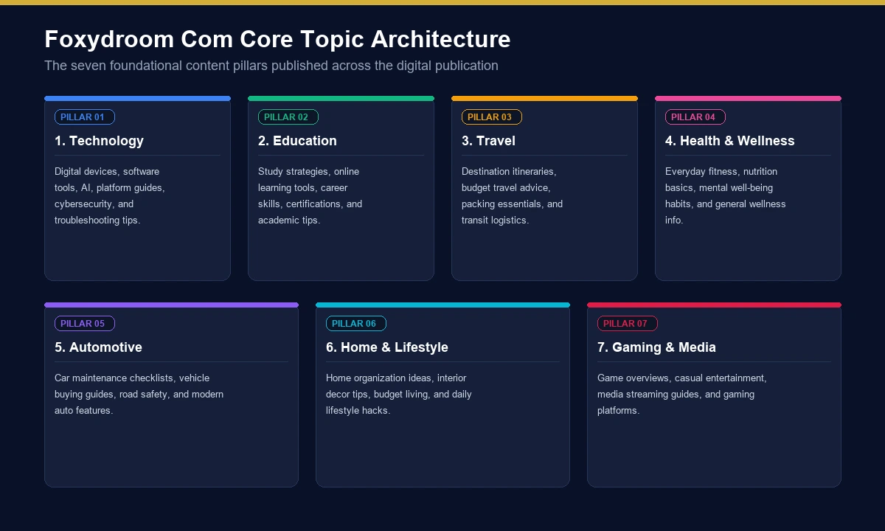
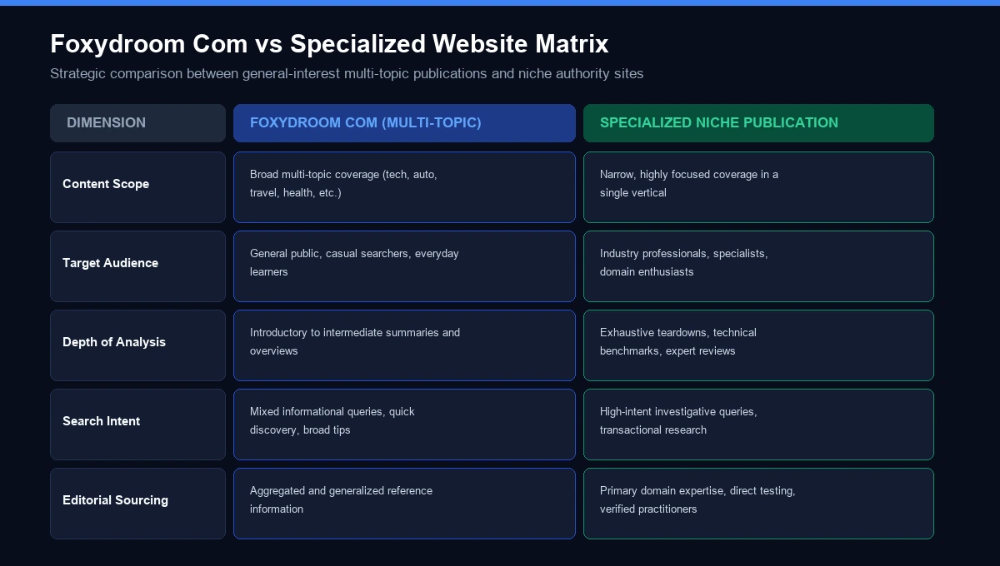
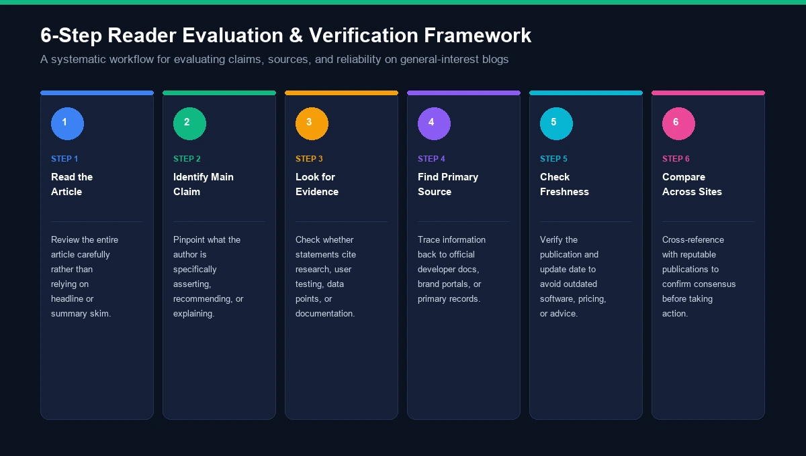

If you searched for foxydroom com, you are probably trying to answer a fairly simple question: What exactly is Foxy Droom, and what can you find on the website?
The answer is more interesting than the name suggests.
Current public information indicates that Foxydroom.com operates primarily as a general-interest content website, with articles spanning subjects such as technology, education, travel, health, automotive topics, gaming and home-related interests. Recent examinations show a blog or online-magazine structure with individual articles, categories, dates and author bylines rather than a conventional software application or online store.
There is also some confusion around the domain because similarly named websites and third-party articles describe Foxydroom in different ways. That makes it particularly important to distinguish the exact foxydroom.com domain from other domains using similar names.
This guide takes a closer look at the website, its content, categories, publishing structure, potential uses, limitations, safety considerations and the questions readers should ask before relying on information found there.
What Is Foxydroom Com?
Foxydroom com is the search phrase commonly used for the foxydroom.com website, which uses the display name Foxy Droom.
The website follows a relatively familiar blog-style publishing model. Individual pages contain article titles, written content, topic organization and author information, allowing visitors to browse different subjects rather than interact with a dedicated software product.
Recent independent examination of the site describes it as a general-interest publication covering areas including:
- Technology
- Education
- Travel
- Health and wellness
- Automotive
- Gaming
- Home and lifestyle
- Practical guides
The mix of subjects suggests that Foxy Droom is designed for a broad audience rather than one narrowly defined professional niche.
Foxydroom Com at a Glance
Detail | Current information |
|---|---|
Website | foxydroom.com |
Display name | Foxy Droom |
Website type | Blog / general-interest content publication |
Main format | Articles and informational guides |
Technology content | Yes |
Education content | Yes |
Travel content | Yes |
Health-related content | Yes |
Automotive content | Yes |
Gaming content | Yes |
Home/lifestyle content | Yes |
Software application | Not clearly established |
Online store | Not identified as the primary purpose |
Public ownership details | Limited |
Recurring byline observed | Adoosylinks |
The important point is that the current public evidence supports describing the site as a content publication, rather than automatically calling it an app, SaaS platform or specialized service.
Foxydroom Com: What Kind of Website Is It?
The easiest way to understand Foxy Droom is to think of it as a multi-topic online magazine or informational blog.
Instead of concentrating on one subject such as technology or automobiles, the site brings different categories together.
This type of website can appeal to readers who enjoy discovering practical information across several areas.
For example, one visitor might arrive looking for information about smart-home technology, while another could discover an article about vehicle maintenance or education.
The broad publishing model is also reflected in third-party examinations of the site's article archive. Recent coverage identifies content spanning automotive advice, technology, travel, gaming and education.
Is Foxydroom Com an App?
There is no clear evidence from the current public descriptions that Foxydroom.com is primarily a downloadable application.
It is better described as a website where users can read articles directly in a browser.
That distinction matters because some generic descriptions of unfamiliar domains can make a content website sound like a technology platform when its actual structure is much simpler.
What Topics Does Foxydroom Com Cover?
The biggest characteristic of Foxy Droom is its variety.

1. Technology
Technology is one of the more visible subject areas associated with the site.
Technology-related articles can cover topics such as:
- Smart-home systems
- Connected devices
- Artificial intelligence
- Digital tools
- Consumer technology
- Internet services
- Emerging technology
This type of content is generally useful for readers who want a straightforward introduction before moving to more specialized documentation.
For technical decisions, however, the original manufacturer or developer documentation should remain the final reference.
2. Education
Education is another topic represented in the site's publishing history.
Recent examinations of the archive identified education-related articles, including material concerning homeschooling and educational support.
Education content can be useful for:
- Parents
- Students
- Teachers
- Homeschooling families
- General readers researching educational topics
The same source also notes dated education articles going back to August 2023. A displayed article date, however, should not automatically be interpreted as the confirmed launch date of the website itself.
3. Travel
Travel content is another part of the site's broad editorial mix.
Travel readers commonly look for:
- Destination ideas
- Planning guides
- Transportation information
- Travel tips
- Local attractions
- General trip advice
Travel information can become outdated quickly, so always verify important details such as visa requirements, ticket prices, opening hours and local regulations through official sources.
4. Health and Wellness
Health is a category that requires a little more caution.
General health articles can help readers understand concepts and discover questions they may want to discuss with a professional.
However, online content should not replace qualified medical advice.
For subjects involving:
- Diagnosis
- Medication
- Treatment
- Serious symptoms
- Medical procedures
- Emergency situations
readers should consult qualified healthcare professionals and authoritative medical sources.
5. Automotive
Automotive content can be particularly practical because readers frequently search for answers to specific vehicle questions.
Topics may include:
- Vehicle maintenance
- Car components
- Common problems
- Driving information
- Automotive technology
- Vehicle ownership
For safety-critical repairs, manufacturer documentation and qualified mechanics remain more appropriate than relying on a general-interest article alone.
6. Home and Lifestyle
Home-related topics can include practical ideas around:
- Small-space living
- Home improvement
- Smart-home technology
- Organization
- Interior ideas
- Everyday household decisions
This category helps explain why some search results associate Foxy Droom with home design and space optimization. However, not every third-party description should automatically be treated as a statement of the site's official purpose.
7. Gaming and Entertainment
Gaming is another subject identified in the site's broader publishing history.
Gaming content may include:
- Game guides
- Online gaming
- Gameplay-related information
- Gaming technology
- Entertainment topics
Because games receive frequent updates, current version information should be checked before following technical instructions.
Why Are People Searching for Foxydroom Com?
A domain-name search usually reflects a different type of search intent from an ordinary informational query.
Someone searching foxydroom com may already have encountered the name somewhere and now wants to understand it.
Common reasons include:
Curiosity
The user saw the name in search results, an article, a social post or another website.
Website Verification
People often search an unfamiliar domain before deciding whether to spend time on it.
Content Discovery
A person may have found a specific Foxy Droom article and want to know what else the site publishes.
Safety Questions
Users may search a website name because they want to understand whether it is a normal content website, an online service, a store or something else.
Brand Research
Digital marketers and SEO professionals may research the domain to understand its content profile and publishing model.
These different intents explain why a comprehensive article needs to discuss more than just the site's homepage.
Foxydroom Com Website Structure
Recent examination of the site describes a traditional publishing structure containing elements such as:
- Category navigation
- Featured content
- Recent posts
- Monthly archives
- Individual article pages
- Author bylines
- Older article pages
This structure makes the website relatively easy to understand from a reader's perspective. You are essentially browsing a collection of articles rather than navigating an application dashboard.
A recent review also observed WordPress and the Expose News theme in the site's footer. That is useful as a technical observation, but the choice of CMS or theme does not by itself establish content quality, ownership or credibility.
Who Is Behind Foxydroom Com?
This is an area where caution is useful.
A recurring author/byline identified in recent examination is Adoosylinks. The site reportedly maintains an author archive associated with that name.
However, a byline does not necessarily prove:
- The author's legal identity
- The site's founder
- The domain owner
- The size of the editorial team
- Professional qualifications
- The company's legal structure
Those are separate facts.
Therefore, it is safer to say that Adoosylinks appears as a recurring publishing byline rather than turning the name into an unsupported biography or ownership claim.
Foxydroom Com and Its Publishing History
The available archive provides clues about the site's content history.
Recent research identified education-related articles displaying dates from August 7, 2023, alongside later material covering subjects such as technology, automotive, travel and gaming.
This tells us something useful: the site has a publishing history that extends back at least several years based on the dates displayed on its articles.
But there is an important distinction:
An article date is not the same thing as a verified domain-registration date or official company launch date.
Without reliable historical documentation, it would be inappropriate to invent a founding story.
Is Foxydroom Com Legit?
The word “legitimate” can mean several different things.
It could mean:
- Does the website exist?
- Is it an actual content website?
- Is it a registered company?
- Is every article accurate?
- Is the website technically safe?
- Is the information authoritative?
- Is the site useful?
These questions need different answers.
Current public information supports the basic observation that Foxydroom.com functions as a content website with articles and topic categories.
That does not, by itself, establish that every article is accurate or that the site is authoritative in every field.
A general-interest publication should be evaluated article by article.
Is Foxydroom Com Safe to Visit?
There is no need to treat an unfamiliar informational website as automatically dangerous, but ordinary web-safety practices are sensible.
When browsing any lesser-known site:
- Confirm the domain spelling.
- Avoid entering unnecessary personal information.
- Do not enter payment details unless there is a clear legitimate reason.
- Be cautious with unexpected downloads.
- Avoid installing unknown browser extensions.
- Be careful with pop-ups and redirects.
- Keep your browser and security software updated.
- Check the destination URL before downloading anything.
Recent third-party coverage similarly recommends treating Foxydroom.com like an unfamiliar blog and exercising ordinary browsing caution, particularly because detailed ownership information is limited.
Safety Is Different From Content Accuracy
This distinction is often overlooked.
A website can be technically accessible while an individual article contains outdated or incomplete information.
Likewise, an article can be useful without the website being an authoritative source for a professional subject.
For that reason, technical safety and information reliability should always be evaluated separately.
How Reliable Is Foxydroom Com Content?
There is no single answer for every article.
Reliability depends on:
- Topic
- Author
- Publication date
- Sources
- Evidence
- Technical complexity
- Whether the information is current
- Whether the article distinguishes fact from opinion
For example, a general article explaining a basic home-design idea does not require the same level of authority as an article giving medical or financial advice.
A Simple Content-Quality Checklist
Before relying on an article, ask:
- Who wrote it?
- When was it published or updated?
- Does it cite sources?
- Can the important claims be independently verified?
- Does the subject require professional expertise?
- Is the information still current?
- Does another authoritative source agree?
This approach is more useful than assigning a blanket “good” or “bad” label to an entire website.
Foxydroom Com for Technology Research
Technology readers can use general-interest websites as a starting point for discovering topics.
For example, suppose an article introduces a smart-home concept.
A sensible research journey could be:
Foxydroom article
↓
Understand the basic concept
↓
Identify the relevant technology
↓
Visit the manufacturer's website
↓
Read official documentation
↓
Check compatibility
↓
Compare alternatives
↓
Make a decision
The same approach works for software, consumer electronics, AI tools and connected-home products.
The general article provides context; the primary source provides confirmation.
Foxydroom Com for SEO Research
The domain can also be relevant to digital marketers researching content and search intent.
An SEO professional may examine:
- Article topics
- Keyword targeting
- Category structure
- Search intent
- Internal linking
- Long-tail keywords
- Topic clusters
- Author pages
- Publication dates
- SERP visibility
- Content breadth
However, simply copying the structure or wording of another website is not a strong long-term SEO strategy.
A better approach is to identify the user's actual question and provide information that is:
- More complete
- Better organized
- More accurate
- Better sourced
- Easier to understand
- More current
Semantic SEO Topics Around Foxydroom Com
A strong page targeting the keyword should naturally connect the main entity with related concepts.
Important semantic entities include:
- Foxy Droom
- Foxydroom.com
- Online magazine
- General-interest blog
- Digital publication
- Technology
- Artificial intelligence
- Smart home
- Home automation
- Education
- Homeschooling
- Travel
- Health and wellness
- Automotive
- Car maintenance
- Gaming
- Home improvement
- Lifestyle
- Digital content
- Online research
- Website credibility
- Content quality
- Domain verification
These concepts provide contextual relevance without repeatedly forcing the exact keyword into every paragraph.
Foxydroom Com vs a Specialized Website
A general-interest site and a specialist publication serve different purposes.

Factor | Foxydroom Com | Specialized Website |
|---|---|---|
Topic range | Broad | Narrow |
Technology | Covered | Often deeper |
Travel | Covered | May specialize |
Automotive | Covered | May specialize |
Education | Covered | May specialize |
Health | Covered | May specialize |
Beginner-friendly discovery | Potentially useful | Depends on site |
Deep professional expertise | Not automatically established | Often stronger |
Broad topic exploration | Stronger fit | Limited |
Primary-source authority | Needs article-level verification | Depends on source |
This is not necessarily a weakness.
A general-interest publication can be excellent for topic discovery, while a specialist organization may be better for professional decisions.
Who May Find Foxydroom Com Useful?
The broad subject range means the likely audience is diverse.
General Readers
People looking for easy-to-understand information about everyday topics.
Technology Enthusiasts
Readers interested in smart homes, AI, connected technology and digital developments.
Parents and Students
People researching education and homeschooling topics.
Travelers
Readers looking for destination and travel-related information.
Vehicle Owners
People searching for basic automotive information.
Homeowners and Renters
Readers interested in home improvement, organization and lifestyle ideas.
Content Researchers
Bloggers and marketers looking for ideas and examples of broad search intent.
Advantages of a Multi-Topic Website
Broad Content Selection
Readers can explore many categories from one domain.
Easy Topic Discovery
A general-interest structure makes it possible to discover subjects outside your normal interests.
Beginner-Friendly Potential
Broad informational content is often easier to approach than highly technical documentation.
Multiple Search Intents
Articles can address informational searches ranging from technology questions to lifestyle topics.
Limitations to Keep in Mind
Broad Does Not Mean Expert
A website covering many subjects cannot automatically be assumed to have specialist expertise in every category.
Ownership Information Is Limited
Recent research does not establish a comprehensive public profile of the organization behind the domain.
Some Information May Age Quickly
Technology, travel, automotive specifications and online services can change.
Third-Party Descriptions Can Conflict
Different articles online describe Foxydroom in different ways, including some highly specific claims about its purpose. Readers should verify such claims against the exact domain rather than accepting them automatically.
Common Mistakes When Researching Foxydroom Com
Mistake 1: Confusing Similar Domains
The difference between foxydroom.com and foxydrooms.com is important.
They are not the same domain.
The latter currently contains a page using the phrase “foxydroom com,” which demonstrates exactly why domain verification matters.
Mistake 2: Treating Third-Party Claims as Official
A website discussing Foxydroom is not necessarily affiliated with Foxydroom.
Mistake 3: Assuming the Website Is a Software Platform
Current public descriptions more strongly support a blog/content-publication model than a conventional software application.
Mistake 4: Using General Content for High-Stakes Decisions
Medical, legal, financial and safety-related information deserves stronger primary sources.
Mistake 5: Ignoring Article Dates
Older content may no longer describe current products, rules or technology.
How to Use Foxydroom Com More Effectively
If you discover an interesting article, use it as the first step rather than the final step.

Step 1: Read the Article
Understand the basic topic.
Step 2: Identify the Main Claim
What exactly is the article telling you?
Step 3: Look for Evidence
Check whether the article provides sources, examples or references.
Step 4: Find the Primary Source
For example:
- Technology → manufacturer/developer
- Government information → government website
- Medical topic → healthcare institution
- Vehicle specification → manufacturer
- Travel rule → official government or transport source
Step 5: Check Freshness
Look at the publication or update date.
Step 6: Compare
If the information affects a meaningful decision, compare it with another authoritative source.
Frequently Asked Questions About Foxydroom Com
What is foxydroom com?
Foxydroom com refers to the Foxydroom.com website, which current public information describes as a general-interest content publication covering topics such as technology, education, travel, health, automotive subjects, gaming and lifestyle.
Is Foxydroom Com an app?
Current evidence does not indicate that Foxydroom.com is primarily a downloadable app. It is better described as a browser-based content website.
Is Foxydroom Com a blog?
Yes. The website is best understood as a blog-style or online-magazine publication with individual articles, categories, archives and author bylines.
What topics does Foxydroom Com cover?
The site's broader publishing profile includes technology, education, travel, health, automotive, gaming, home and lifestyle-related subjects.
Who writes for Foxydroom Com?
A recurring byline identified in recent research is Adoosylinks. However, that byline alone does not establish the person's legal identity, professional background or ownership of the website.
When did Foxydroom Com start?
Some archived articles display dates going back to August 2023. Those article dates do not independently establish the domain's official launch date or founding history.
Is Foxydroom Com safe?
Current third-party descriptions treat it as an informational website, but detailed independent information about ownership is limited. Normal safe-browsing practices are recommended when visiting any unfamiliar website.
Can I trust everything published on Foxydroom Com?
It is better to evaluate individual articles rather than assume that every page has the same authority. For health, financial, legal, safety or technical decisions, verify important claims with authoritative sources.
Is Foxydroom Com an online store?
The current public descriptions identify it primarily as a content website rather than an e-commerce store.
Is Foxydroom Com useful for SEO research?
It can be useful for examining broad content topics, article structures and search intent. However, SEO professionals should independently evaluate backlinks, traffic, indexing and other metrics rather than assuming value from the domain name alone.
Why are there different descriptions of Foxydroom online?
Different third-party websites may interpret the domain differently, and similar domain names can add to the confusion. The safest approach is to verify the exact foxydroom.com domain and distinguish first-party information from third-party commentary.
Final Thoughts on Foxydroom Com
The search term foxydroom com is primarily associated with a broad online publishing website using the name Foxy Droom.
Current public evidence indicates that the site publishes articles across multiple areas, including technology, education, travel, health, automotive, gaming, home and lifestyle topics. Its structure resembles a general-interest blog or digital magazine more than a conventional software application or online store.
One of the most important things to remember is that not every description found online should automatically be treated as an official description of the website. Ownership information is limited, and some third-party pages make claims that go beyond what can be directly established from the site's visible publishing structure.
For readers, the practical approach is straightforward: use Foxydroom.com for content discovery and general information, but verify important claims through primary or specialist sources when the subject involves health, finance, legal matters, vehicle safety or other high-stakes decisions.
And if you are researching foxydroom com because you encountered the name elsewhere, check the exact domain carefully. Even a single extra letter—such as the difference between foxydroom.com and foxydrooms.com—can lead you to a completely different website.
That combination of domain verification, source checking and article-level evaluation gives you a much clearer picture of what Foxy Droom actually is.
For more such useful information read our site ateliergolddruck.com